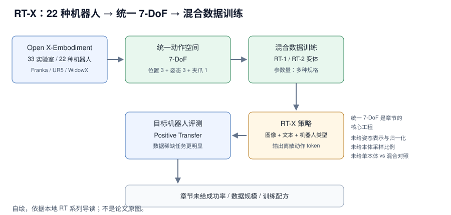

RT-X（2023）把 RT 系列的“单机器人策略”推到“跨本体策略”：Google 联合 33 家实验室、收集 22 种不同机器人（Franka、UR5、WidowX 等）的数据构建 Open X-Embodiment，把所有动作映射到统一的 7-DoF（位置 3 + 姿态 3 + 夹爪 1）空间，再用 RT-1 / RT-2 变体在混合数据上训练。本地章节给出的核心结论是正迁移：用别人的机器人数据训练，能提升自己机器人的性能，数据稀缺任务上更明显。章节没有给任何成功率、数据规模、训练配方或延迟，因此本文按“范式阅读”写，不按“可复现”写。
来源约定：本文事实只取自本仓库 RT 系列导读（下称“本章程”），没有用模型记忆补写论文细节。
标记约定：章节陈述＝本地导读自己的归纳；章节未给＝本地章节没有该信息；公开入口*＝入口不在章节内、未在本地章节核验。
版本：论文 2023 年（章节只给年份）；arXiv 编号、论文版本日期、代码 commit 章节均未给；查阅日期 2026-11-01。
1. 论文与官方资源
| 资源 | 入口 | 阅读用途 |
|---|---|---|
| 论文 | 章节未给 | 本地章节没有给 arXiv 编号或 PDF 入口 |
| 源码 | 章节未给 | 本地章节没有给 RT-X 官方训练/推理代码 |
| 权重 | 章节未给 | 本地章节没有给 checkpoint 或模型卡 |
| 项目页 | robotics-transformer-x.github.io | 公开入口*；章节只给数据集名称，未给页面 |
| 数据集 | google-deepmind/open_x_embodiment | 公开入口*；章节只给 Open X-Embodiment 名称与 33/22 规模 |
\* 公开入口未在本地章节核验；本地章节只用于事实核对。
论文题目：Open X-Embodiment / RT-X（章节未给完整题目）；arXiv：章节未给；版本：2023；代码 commit：章节未给；查阅日期 2026-11-01。
版本提示： 章节把 RT-X 写成“RT-1 / RT-2 变体、多种规格”，本身没有固定基座。任何“RT-X 的成功率/参数量/延迟”都必须先问是哪个变体；本文不替它补数字。
2. 核心问题：本体差异放在哪里处理
一句话：RT-X 重新分配的是“本体差异”的处理位置——不在每个机器人上各训一个策略，而是先把动作对齐到共享 7-DoF 空间，再用混合本体数据训练一个策略族。

图 1：RT-X 的数据、动作空间与训练信息流。自绘，依据本地导读；不是论文原图。
与图对应的信息流：33 家实验室的 22 种机器人数据 → 统一 7-DoF 动作空间 → RT-1 / RT-2 变体在混合数据上训练 → RT-X 策略接收图像、文本与机器人类型 → 在目标机器人上评测，观察正迁移。
对比主流路径：每个机器人一个专家策略 → 一个策略族跨本体训练。
- 节省了什么：按章节的正迁移结论，数据稀缺的机器人可以借用其他本体的数据；不需要为每个本体从零收集同等规模的演示。
- 保留了什么：RT-1 / RT-2 的架构与离散动作 token 输出；章节表格明确写 RT-X 是这两种架构的变体。
- 代价是什么：所有动作要先映射到 7-DoF，章节没有给非 7-DoF 本体的补齐/裁剪规则；混合采样比例也没有给。
- 读者该学什么：跨本体的第一性问题不是模型大小，而是动作空间对齐与数据混合。
来源：本章程 §4.1–4.2、§5。
3. 模型结构与张量流
3.1 数据集：章节给出的规模与缺口
| 项目 | 章节给出的值 | 说明 |
|---|---|---|
| 数据集名称 | Open X-Embodiment | 章节只给名称 |
| 合作实验室 | 33 家 | 规模描述 |
| 机器人种类 | 22 种 | 规模描述 |
| 机器人举例 | Franka、UR5、WidowX | 章节只列三个例子 |
| 数据规模 | 章节未给 | 没有 episodes、小时数或任务数 |
| 数据格式 | 章节未给 | 没有 RLDS/LeRobot 等格式说明 |
| 常用子集 | BridgeData V2 | 章节 §5 学习建议点名，称适合测试跨域泛化 |
章节没有给数据规模，因此不能从“33 家 / 22 种”推算训练 token 数、batch 或训练时长。
3.2 统一动作空间：7-DoF
| 分量 | 维数 | 章节说明 |
|---|---|---|
| 位置 | 3 | position |
| 姿态 | 3 | orientation |
| 夹爪 | 1 | gripper |
| 合计 | 7 | 位置 + 姿态 + 夹爪 |
维度账本（按章节定义直接相加，不是论文公式）：
dim(action) = 3 + 3 + 1 = 7
章节没有给姿态表示（欧拉角/四元数/轴角）、归一化方式、夹爪开合约定、控制频率，也没有给“非 7-DoF 机器人怎么映射”。读数据卡或自建管线时，这四项要先确认。
3.3 RT-X 模型：不是一个单独架构
章节表格把 RT-X 的核心架构写成“RT-1 / RT-2 变体”，参数量写成“多种规格”；输入比 RT-1 / RT-2 多了“机器人类型”，输出仍是离散动作 token。这意味着同一份“RT-X”结果可能来自不同基座；比较时必须先问是哪个变体、哪个参数量、在哪个本体上评测。
3.4 读代码看什么
章节没有给 RT-X 官方代码。如果借 RT-1 实现读，重点看三处：动作 tokenizer 是否支持 7 维、输入里是否有本体 ID、数据加载是否按本体分组。这三处决定“统一动作空间”是不是真的统一，而不是只在文档里统一。
来源：本章程 §4.1–4.2、§5。
4. 实验结果
4.1 章节能支撑的结论
协议：章节没有给 benchmark 名称、任务数、每任务 trials、成功率、种子或真机硬件；下表只记录章节的定性结论与它给出的规模数字。
| 章节结论 | 章节表述 | 支撑数字 | 能说明什么 |
|---|---|---|---|
| 跨本体训练可行 | 22 种机器人、33 家实验室的混合数据 | 33 / 22 | 规模与可行性 |
| 正迁移 | “用别人的机器人数据训练，能提升自己机器人的性能” | 章节未给 | 方向性结论 |
| 数据稀缺任务更明显 | “特别是在数据稀缺的任务上” | 章节未给 | 方向性结论 |
| BridgeData V2 适合跨域测试 | 学习建议 | 章节未给 | 实践建议 |
读法：这四条都不是受控实验数字；不能写成“RT-X 比 RT-1 高 X%”。章节也没有给“单本体训练 vs 混合本体训练”的对照，因此“正迁移”只能当作者结论，不能当本文复算结果。
4.2 标准对照表为什么填不出来
固定列是模型 / 参数量 / 推理显存 / 延迟 / 平均成功率。章节只给 RT-X 参数量“多种规格”，显存、延迟、成功率全缺；RT-1 / RT-2 的数字又来自另一张概览表，不能拼成 RT-X 的一行。强行补列会变成编造。
4.3 真机
章节没有给硬件、相机、任务、演示数、微调步数或测试次数；只给“在目标机器人上评测”的定性描述。视频入口章节未给。
来源：本章程 §4.1–4.2、§5。
5. 消融实验
章节没有消融表，也没有“单本体 vs 混合”“不同混合比例”“有无本体 ID”的对照。下表只列出章节提到的设计选择，以及它们为什么不能当消融结论：
| 设计选择 | 章节给出的证据 | 能否当消融结论 |
|---|---|---|
| 统一 7-DoF 动作空间 | 只给定义 | 否，没有其他动作空间的对照 |
| 22 种机器人混合 | 只给正迁移结论 | 否，没有单本体数值 |
| RT-1 基座 vs RT-2 基座 | 只给两种变体 | 否，没有同任务对照 |
| BridgeData V2 子集 | 只给学习建议 | 否，没有与其他子集的对照 |
读者该不该复用：统一动作空间 + 混合数据是跨本体的必要工程，但章节没有给混合比例、本体采样权重与负迁移分析；复用时必须自己补这三项消融。
来源：本章程 §4.2、§5。
6. 延迟与显存怎么读
| 模型 | 章节频率 | 显存 | 测量协议 |
|---|---|---|---|
| RT-X（RT-1 基座） | 视基座模型而定 | 章节未给 | 章节未给 |
| RT-X（RT-2 基座） | 视基座模型而定 | 章节未给 | 章节未给 |
| RT-1（参照） | ~3Hz | 章节未给 | 章节未给 |
| RT-2（参照） | <1Hz | 章节未给 | 章节未给 |
章节没有给 RT-X 自己的延迟；“视基座模型而定”意味着不能用一个数字代表 RT-X。RT-1 / RT-2 的频率是同一张概览表里的数字，只能当参照，不能当成 RT-X 的实测。
区分：1000 / 延迟 只说明策略调用频率，不说明动作执行频率或端到端反馈频率。测量时应分开记录模型前向、完整请求（含图像预处理/通信）与重规划间隔；章节三项都没有给。
来源：本章程 §5。
7. 训练资源与卡数
| 训练要素 | 章节值 | 说明 |
|---|---|---|
| 硬件 / 卡数 | 章节未给 | 没有 GPU 型号或数量 |
| 优化器 / 步数 | 章节未给 | 没有训练步数 |
| 有效 batch / microbatch / 累积 | 章节未给 | 无法反推 |
| 学习率 / warmup / EMA | 章节未给 | 没有配方 |
| 冻结模块 | 章节未给 | 没有说明冻结哪些层 |
| 数据规模 / 采样比例 | 章节未给 | 只说“混合数据集” |
| 本体采样权重 | 章节未给 | 跨本体训练的关键项缺失 |
章节只给“在混合数据集上训练”，没有给采样比例；跨本体训练的核心恰恰是采样比例与动作对齐，所以无法从章节复现训练。
三级复现：
- 理解与评测：章节没有权重，无法加载评测；只能读范式与数据规模。
- 训练链路：章节没有代码、数据格式、损失与优化器，无法验证。
- 完整训练：章节没有卡数、步数、batch、学习率与采样比例，不能声称可复现。
来源：本章程 §4.2。
8. 代码阅读顺序
| 顺序 | 路径 / 模块 | 阅读重点 |
|---|---|---|
| 1 | 本章程 §4.1 的数据集描述 | 33 / 22 / 机器人举例，先建立数据规模感 |
| 2 | google-research/robotics_transformer* | RT-1 参考实现；不是 RT-X 官方代码 |
| 3 | 动作空间对齐（自建） | 7-DoF 映射、姿态表示、夹爪符号、归一化 |
| 4 | 数据加载（自建） | Open X-Embodiment / BridgeData V2 的格式与本体重组 |
| 5 | 训练与评测（自建） | 混合采样、基座选择、目标机器人协议 |
坑：
- 不要把 RT-1 仓库当成 RT-X 官方实现；章节只把 RT-X 写成 RT-1 / RT-2 的变体。
- 不要把 7-DoF 当成所有机器人的原生动作维度；章节只给统一后的空间，没有给映射规则。
- BridgeData V2 只是章节推荐的最常用子集，不等于整个 Open X-Embodiment。
9. 从 checkpoint 开始复现
章节没有给 RT-X 权重、代码或训练命令，因此不能写“从 checkpoint 开始复现”。能做的是最小阅读路径：
# 非 RT-X 官方命令；仅用于读 RT-1 参考实现 git clone https://github.com/google-research/robotics_transformer # 公开入口*
检查清单：
- 数据：确认拿到的是 Open X-Embodiment 的哪个子集；章节只点名 BridgeData V2 常用。
- 动作：把目标机器人动作映射到 7-DoF，并确认姿态表示与夹爪符号。
- 本体 ID：确认输入里“机器人类型”的编码方式；章节只给模态，未给实现。
- 评测：章节未给协议，需要自建任务、trials 与成功判定。
三级复现：理解 1/3（可读范式）；训练链路 0/3（无代码与配方）；完整训练 0/3（无权重与数据管线）。
10. 如何用到自己的项目
可复用的是“统一动作空间 + 混合本体数据 + 本体条件输入”的组合，不是照搬 RT-X 的某个分数。
- 统一动作空间：先把目标机器人动作映射到 7-DoF，再比较单本体训练与混合训练；测数据稀缺任务的正迁移；代价是映射层与归一化要自己写。
- 混合采样：给不同本体设采样权重，观察目标本体成功率与负迁移；测权重敏感度；代价是要有多个本体的数据与统一评测。
- 本体 ID 条件：在输入里加机器人类型编码，测未见本体的泛化；代价是需要本体描述规范与额外 token。